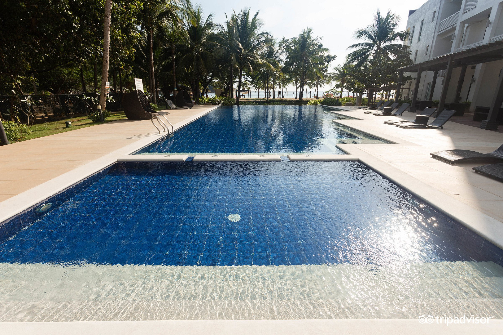
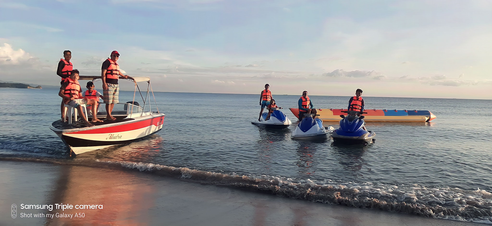
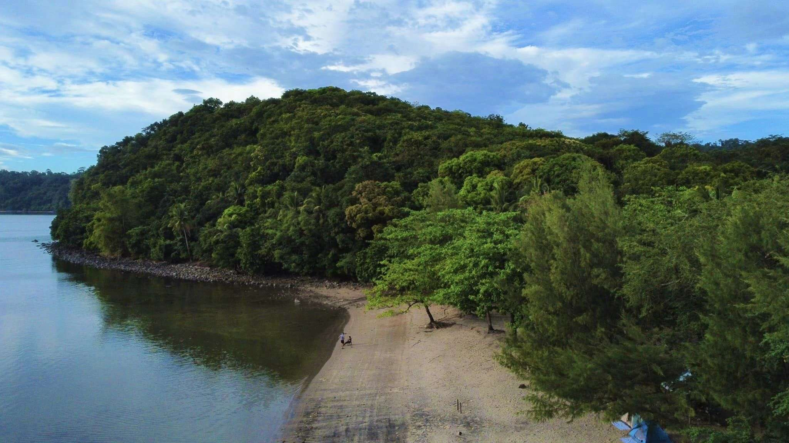

Dive into adventure and coastal fun.

A family-friendly resort featuring water slides and beach access. Perfect for group outings and coastal relaxation.

A public beach known for its clear waters, open 24 hours for visitors seeking a quick dip or a sunset view.

A rustic coastal campground that offers marine life encounters and a peaceful camping experience by the sea.